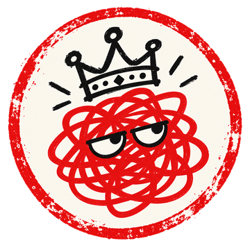

GARABATO NACIONAL
la actualidad, hecha un garabato
Sátira política y humor ácido en dibujos animados sobre la actualidad de España. Los hechos, verificados; las opiniones, del Garabato.

la actualidad, hecha un garabato
Sátira política y humor ácido en dibujos animados sobre la actualidad de España. Los hechos, verificados; las opiniones, del Garabato.